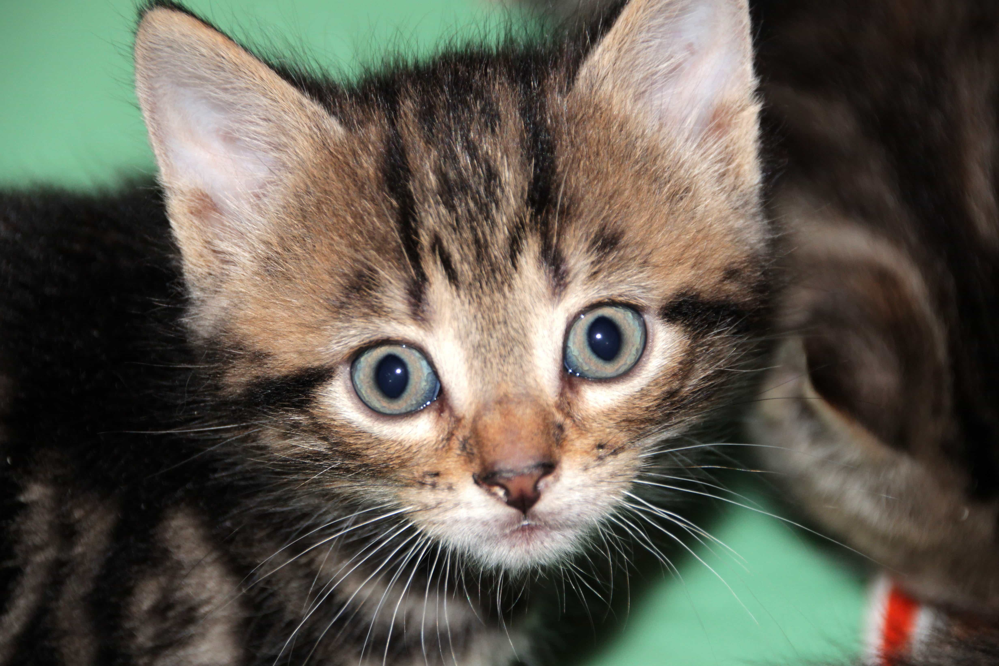

Ohjeet reseptin lisäämiseen

Ohjeet reseptin lisäämiseen:
1. Kopio pohja reseptille. Täältä
2. Kirjoita resepti annetulle pohjalle.
3. Lähetä pohja ja kuva sähköpostitse.
Säännöt:
1. Pitää olla kuva jonka on itse ottanut reseptin ruuasta.
2. Kuvan tulee olla .png tai .jpeg muodossa.
3. Resepti täytyy olla kirjoitettuna html kielellä.
HUOM! Kun kuva on laitettu tälle sivustolle niin se on lisenssoituu vapaan lisenssi alaiseksi eli sitä saa muokata ja levittää miten haluaa.